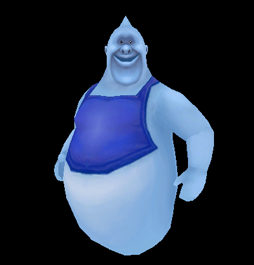

10 |
Basic Rules and Information |
 |
Basic Rules The four characters take turns at hitting the Crystal Ball. The result of the Crystal Ball determines how far they will all progress along the board. As the car moves along the board by the number indicated by the Crystal Ball, players can position their cursors over coins and gems to collect them. Whenever the car lands on a cell that gives or takes coins, each player will receive or lose the amount indicated. The cost of buying scrolls is shared evenly between all players; as well, a wrong password is penalized evenly among all four players. The only situations when players can get different amounts of money are when collecting different amounts of coins and gems when moving along the board and when playing a mini-game or On-Board Challenge. When the car is completely destroyed and the players don’t have the 500 coins it costs to repair it, they will lose the game. When the players guess the correct password, they will win the game and get Fazzy’s treasure. Afterwards the players will play the last mini-game, Final Run, and then get ranked by the amount of money they have collected. Players will also get a trophy and a title based on their performance. For example, getting the highest score will earn the title Mansion Captain. When the players enter the wrong password, they will lose 200 coins (each player paying as much as he or she can depending on the amount of coins they have accumulated) and continue to play the game. However, if the players lose all their coins, the game is over. After collecting 5 clues, they can choose Answer to guess the correct password or reset their clues and password and continue to play. But if the players have collected less than 5 clues, they have three choices: Attempt an answer for the correct password, reset their clues and password and continue to play, or continue without resetting. It will cost you 200 coins to reset, and if you do not have enough money, you will only have two options: continue the game or guess an answer! Basic Information
The user can select to play one of four characters: A boy, a girl, a butler and an old man.  Fazzy is a friend in the story who offers advice and sells hints to the players.
The four characters sit in the Magic Jack-O-Lantern Car provided by Fazzy and move forward together. In the Ghost Contest On-Board Challenge, the ghosts can shoot at and damage the car. When the car is completely destroyed, the players must pay 500 coins to repair it immediately. If the players don’t have enough money, then the game is over. When the car is only damaged, and not completely destroyed, the players can only repair it when they pass by a Repair Cell. When it is a human player’s turn to hit the Crystal Ball, he/she can check the damage level of the car by positioning the cursor over it.
Magic scrolls provide clues that help you guess the final password to access the treasure.
The players can be shrunk by the Enchanter Ghost so that they can enter some special areas. After players leave these areas, the Enchanter Ghost will change them back to their normal sizes. The Enchanter Ghost only appears at the entrances to some special places.
You can use the Crystal Ball icon to determine how many cells the car moves. The icons for basic character information are positioned in the corners of the screen. You can see the information about the player and the amount of money earned. |


 |
 |
 |